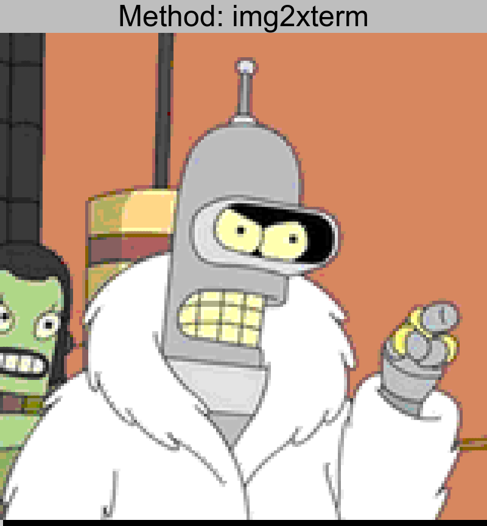

A Comparison of Image to ASCII Conversion Tools
Inspired by ponysay, I think wicked ascii/ansi artwork on the terminal is great.
I decided to survey all the tools I could find that aid in this conversion to see if there were any dramatic differences in results.
Methodology
For these tests I used an image with a 160px width, twice that of
a standard terminal. Then I cat’d the image in plain xterm and
took a screenshot of the results.
The original has been scaled up (6X) to be the same relative size as the resulting screenshots.
My entire methodology is on github
if you wish to see exactly how I made these images. In theory
it is 100% reproducible from make. (assuming on a linux desktop)
Tools Compared
Results
bender.png



lenna.png


nyan.png


Conclusion
img2xterm stands out to me as the most accurate and true to the original, with util-say as a close second. Both of these tools understand “half-block“ characters with two colors, effectively doubling the horizontal resolution of the resulting characters. (two colors per “pixel”)
catimg and img-cat both have good color representation, but lack the additional resolution compared to the other tools, giving it a more “pixelated” look.
img2txt and jp2a are “true ascii” tools, they are really not in the same league as the others. I included them here for completeness.